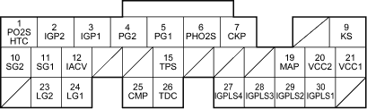

Fuel and Emissions Systems
|
11-12 |
ECM Inputs and Outputs at Connector A (31P)

Wire side of female terminals
NOTE: Standard battery voltage is 12 V.
| Terminal number | Wire colour | Terminal name | Description | Signal |
| 1 | BLK/WHT | PO2SHTC (PRIMARY HEATED OXYGEN SENSOR HEATER CONTROL) | Drives primary HO2S heater | With ignition switch ON (II): battery voltage
With fully warmed up engine running: duty controlled |
| 2 | YEL/BLK | IGP2 (POWER SOURCE) | Power source for the ECM circuit | With the ignition switch ON (II): battery voltage
With the ignition switch OFF: about 0 V |
| 3 | YEL/BLK | IGP1 (POWER SOURCE) | Power source for the ECM circuit | With the ignition switch ON (II): battery voltage
With the ignition switch OFF: about 0 V |
| 4 | BLK | PG2 (POWER GROUND) | Ground for the ECM circuit | Less than 1.0 V at all times |
| 5 | BLK | PG1 (POWER GROUND) | Ground for the ECM circuit | Less than 1.0 V at all times |
| 6 | RED | PHO2S (PRIMARY HEATED OXYGEN SENSOR, SENSOR 1) | Detects primary HO2S sensor (sensor 1) signal | With throttle fully opened from idle with fully warmed up engine: about 0.6 V
With throttle quickly closed: below 0.4 V |
| 7 | BLU | CKP (CRANKSHAFT POSITION SENSOR) | Detects CKP sensor signal | With engine running: pulses |
| 9 | RED/BLU | KS (KNOCK SENSOR) | Detects knock sensor signal | With engine knocking: pulses |
| 10 | GRN/YEL | SG2 (SENSOR GROUND) | Sensor ground | Less than 1.0 V at all times |
| 11 | GRN/WHT | SG1 (SENSOR GROUND) | Sensor ground | Less than 1.0 V at all times |
| 12 | BLK/RED | IACV (IDLE AIR CONTROL (IAC) VALVE) | Drives IAC valve | With engine running: duty controlled |
| 15 | RED/BLK | TPS (THROTTLE POSITION SENSOR) | Detects TP sensor signal | With throttle fully open: about 4.8 V
With throttle fully closed: about 0.5 V |
| 18 | WHT/GRN | VSS (VEHICLE SPEED SENSOR) | Detects VSS signal | With ignition switch ON (II) and front wheels rotating: cycles about 0 V-about 5 V or battery voltage |
| 19 | GRN/RED | MAP (MANIFOLD ABSOLUTE PRESSURE SENSOR) | Detects MAP sensor signal | With ignition switch ON (II): about 3 V
At idle: about 1.0 V (depending on engine speed) |
| 20 | YEL/BLU | VCC2 (SENSOR VOLTAGE) | Provides sensor voltage | With ignition switch ON (II): about 5 V
With ignition switch OFF: about 0 V |
| 21 | YEL/RED | VCC1 (SENSOR VOLTAGE) | Provides sensor voltage | With ignition switch ON (II): about 5 V
With ignition switch OFF: about 0 V |
| 23 | BRN/YEL | LG2 (LOGIC GROUND) | Ground for the ECM circuit | Less than 1.0 V at all times |
| 24 | BRN/YEL | LG1 (LOGIC GROUND) | Ground for the ECM circuit | Less than 1.0 V at all times |
| 25 | BLU/WHT | CMP (CAMSHAFT POSITION SENSOR) | Detects CMP sensor signal | With engine running: pulses |
| 26 | GRN | TDC (TOP DEAD CENTRE SENSOR) | Detects TDC sensor | With engine running: pulses |
| 27 | BRN | IGPLS4 (No.4 IGNITION COIL PULSE) | Drives No.4 ignition coil | With ignition switch ON (II): about 0 V
With engine running: pulses |
| 28 | WHT/BLU | IGPLS3 (No.3 IGNITION COIL PULSE) | Drives No.3 ignition coil | |
| 29 | BLU/RED | IGPLS2 (No.2 IGNITION COIL PULSE) | Drives No.2 ignition coil | |
| 30 | YEL/GRN | IGPLS1 (No.1 IGNITION COIL PULSE) | Drives No.1 ignition coil |